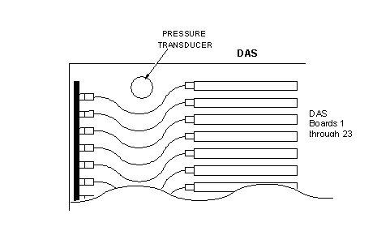
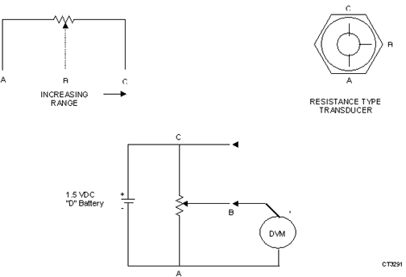
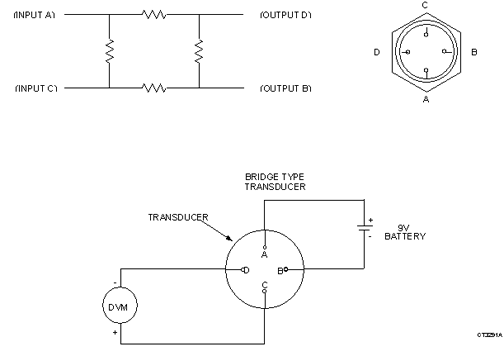

Operating Documentation
Direction 5112972-800, Rev# 2
CT Planned Maintenance Procedures
Operating Documentation |
| Required Persons | Preliminary Reqs | Procedure | Finalization |
|---|---|---|---|
| 1 | Timing Not Applicable | 15 mins | Timing Not Applicable |
Procedure Effectivity:
| Assembly: | GANTRY |
| Subassembly: | Xenon Detector |
| Purpose: | Measure & Record Detector |
| Last Revised: | October 2003 |
| Item | Qty | Effectivity | Part# | Manufacturer | |
|---|---|---|---|---|---|
| Standard FE Toolkit | 1 | - | - | - | |
| Battery (D-Cell) | 1 (for Resistance Type Transducer) | - | - | - | |
| Battery (9V) | 1 (for Bridge Type Transducer) | - | - | - | |
This procedure is for xenon detectors only.
Remove the right side Gantry cover and turn off the scan drive switch.
Rotate Gantry to access DAS Boards 1 through 23. Remove this cover.
Locate the transducer ( Illustration 1) and determine which type you have. The resistance type has three connections, ( Illustration 2) and the bridge type has four connection ( Illustration 3).
Illustration 1: Accessing Pressure Transducer

Illustration 2: Resistance Type Transducer

Illustration 3: Bridge Type Transducer

| POTENTIAL FOR SHOCK. | |
| VOLTAGE IS PRESENT DURING PROCEDURE. | |
| Make sure to keep body parts away from exposed circuits while performing this procedure. |
Measure voltages as follows:
(For Resistance Type Transducer) Connect the battery as shown in Illustration 2. Measure voltage with DVM across terminals A and B, then across A and C.
(For Bridge Type Transducer) Measure the voltage across the battery, then connect the DVM and battery as shown in Illustration 3 and measure voltage across terminals D and C,
Calculate pressure as follows:
(For Resistance Type Transducer) Calculate the % pressure as follows:
% Pressure = Measured Voltaqe Between A and B x 100 = ___% @ ____ °F.
--------------------------------
Measured Voltage Between A and C
If the % of pressure was taken at a temperature other than 68°F, calculate a correct % of pressure by: %p' = %p + ((68 - t2) / 6),where t2 is the measured ambient room temperature and % p' is the correct % of pressure. For example: If the %p calculated above equaled 77% @ 86°F then: %p' = 77 + ((68 - 86) / 6) = 74%.
| NOTE: | Minimum allowable pressure is 74%. If the pressure decreases to 74%, arrangements should be made to recharge detector. |
(For Bridge Type Transducer) Calculate the PSIG as follows:
AMBIENT PRESSURE = [VOLTAGE IN mV ACROSS C & D × 50,000 ] / VOLTAGE ACROSS BATTERY
PSIG= AMBIENT PRESSURE + [2 × (68 - ROOM TEMPERATURE) / 3]
| NOTE: | The detector pressure shall not be allowed to decrease below 275 PSI. If the pressure reaches 275 PSI, arrangements should be made to recharge detector. |
Record the pressure for future reference.
Replace the cover and return the system to normal operation.
No finalization required.